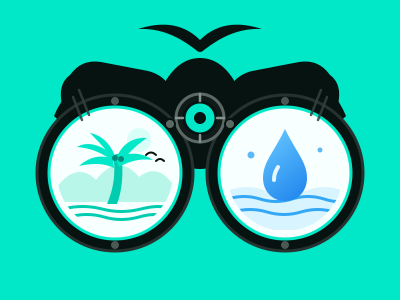

Why coasts matter
Coastal wetlands and estuaries provide habitat for fish and wildlife. Wetlands can also soften the effects of storms, and healthy coastal places support local work and recreation.

Aqua WatchA small project for a big coastline
The U.S. West Coast is home to wildlife, communities, and places people love. Paying attention to pollution is one small way to understand what our shoreline needs.
Reports are public: exact locations and descriptions appear on the shared map.
Your observation
Record what you noticed near a U.S. Pacific shoreline. Reports are public and do not alert a response team.
Your contributions
Community coast watch
Satellite view from Tijuana to Vancouver. Scroll over the map, use + / −, or pinch to zoom. Community reports are visible to everyone.
Five historical examples come from public agency records and use warning signs with aqua outlines. Click one for its source. TEST reports are local demonstrations, not live warnings.
Beach colors use shared and TEST reports within 5 km in the past 30 days: green means none, orange means one or more, and red means a high-concern report or three or more. TEST reports can change these example colors. These are not official safety notices.
Satellite imagery © Esri, Maxar, Earthstar Geographics, and the GIS User Community.
Community reports, including exact locations and descriptions, are public.
A few things to know
Short notes to help make sense of what we see around the water.
Coastal wetlands and estuaries provide habitat for fish and wildlife. Wetlands can also soften the effects of storms, and healthy coastal places support local work and recreation.
Trash can travel from streets and streams to the sea. Rain can also carry extra nutrients from land into water. Too many nutrients can fuel algae blooms that harm water quality and aquatic life.
Put litter in the right bin, use less disposable plastic, and join a local cleanup. You can help inland too: trash picked up near a stream may never reach the coast.
Eight quick questions
Try the quiz to review what you learned. Each answer includes a quick explanation.